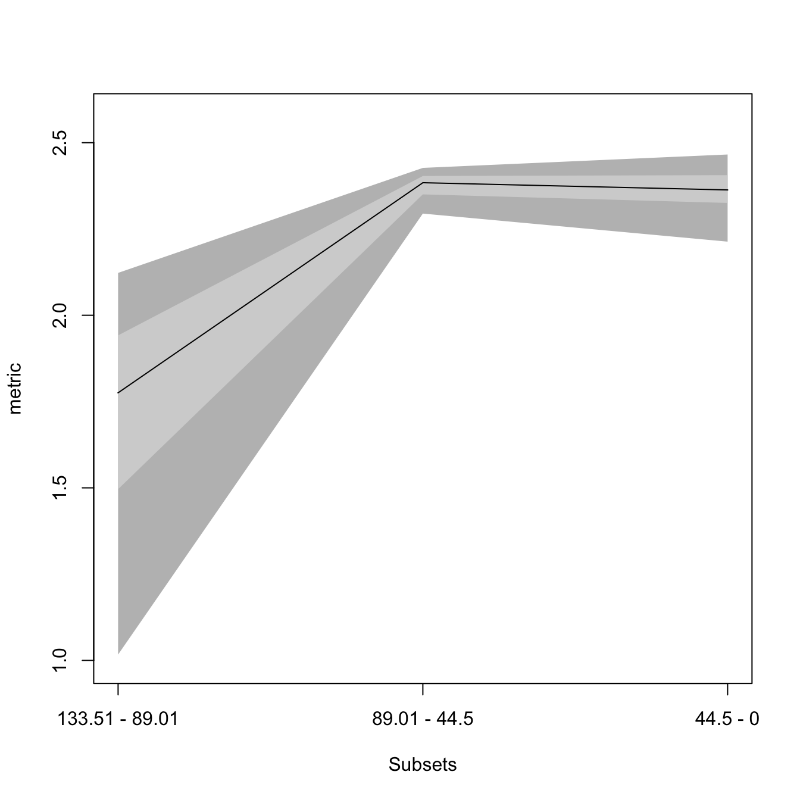
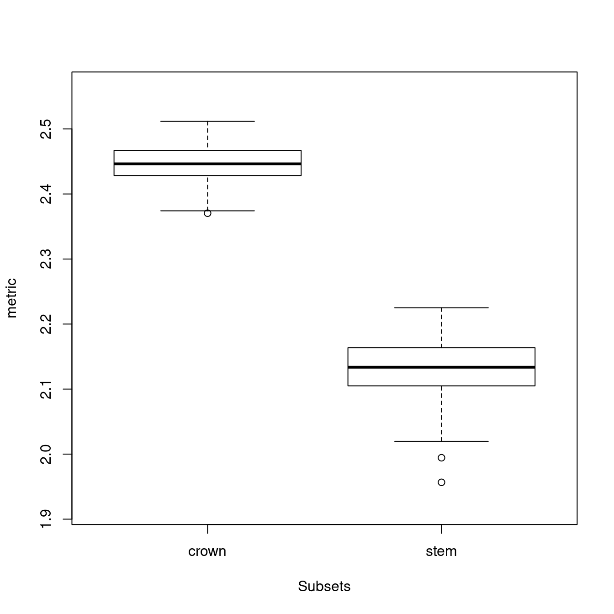

3 Getting started with dispRity
3.1 What sort of data does dispRity work with?
Any matrix object in R.
Disparity can be estimated from pretty much any matrix as long as rows represent the elements and columns the dimensions.
These matrices can be observations, pairwise differences between elements, ordinations, etc…
Since version 1.4 it is also possible to include a "list" containing matrices.
These matrices need to have the same dimensions and rownames but can contain different values.
This is especially useful for modelling uncertainty (see here for more details).
3.2 Ordinated matrices
Classically, when a high number of variables is used, disparity is calculated from ordinated matrices. These can be any type of ordinations (PCO, PCA, PCoA, MDS, etc.) as long as elements are the rows (taxa, countries, field experiments) and the dimensions are the columns. However, note that this is not required from any of the functions in this package. You can also use distance matrices or any other matrix type that suits your question and your analysis!
3.2.1 Ordination matrices from geomorph
You can also easily use data from geomorph using the geomorph.ordination function.
This function simply takes Procrustes aligned data and performs an ordination:
require(geomorph)
## Loading the plethodon dataset
data(plethodon)
## Performing a Procrustes transform on the landmarks
procrustes <- gpagen(plethodon$land, PrinAxes = FALSE,
print.progress = FALSE)
## Ordinating this data
geomorph.ordination(procrustes)[1:5,1:5]## PC1 PC2 PC3 PC4 PC5
## [1,] -0.0369930887 0.05118246 -0.0016971586 -0.003128881 -0.010935739
## [2,] -0.0007493689 0.05942083 0.0001371682 -0.002768621 -0.008117767
## [3,] 0.0056004751 0.07419599 -0.0052612189 -0.005034502 -0.002747104
## [4,] -0.0134808326 0.06463958 -0.0458436274 -0.007887336 0.009817034
## [5,] -0.0334696064 0.06863518 0.0136292227 0.007359383 0.022347215Options for the ordination (from ?prcomp) can be directly passed to this function to perform customised ordinations.
Additionally you can give the function a geomorph.data.frame object.
If the latter contains sorting information (i.e. factors), they can be directly used to make a customised dispRity object customised dispRity object!
## Using a geomorph.data.frame
geomorph_df <- geomorph.data.frame(procrustes,
species = plethodon$species, site = plethodon$site)
## Ordinating this data and making a dispRity object
geomorph.ordination(geomorph_df)## ---- dispRity object ----
## 4 customised subsets for 40 elements in one matrix:
## species.Jord, species.Teyah, site.Allo, site.Symp.More about these dispRity objects below!
3.2.2 Ordination matrices from Claddis
dispRity package can also easily take data from the Claddis package using the Claddis.ordination function.
For this, simply input a matrix in the Claddis format to the function and it will automatically calculate and ordinate the distances among taxa:
require(Claddis)
## Ordinating the example data from Claddis
Claddis.ordination(michaux_1989)## [,1] [,2] [,3]
## Ancilla 0.000000e+00 4.154578e-01 0.2534942
## Turrancilla -5.106645e-01 -1.304614e-16 -0.2534942
## Ancillista 5.106645e-01 -1.630768e-17 -0.2534942
## Amalda 1.603581e-16 -4.154578e-01 0.2534942Note that several options are available, namely which type of distance should be computed.
See more info in the function manual (?Claddis.ordination).
Alternatively, it is of course also possible to manual calculate the ordination matrix using the functions Claddis::calculate_morphological_distances and stats::cmdscale.
3.2.3 Other kinds of ordination matrices
If you are not using the packages mentioned above (Claddis and geomorph) you can easily make your own ordination matrices by using the following functions from the stats package.
Here is how to do it for the following types of matrices:
- Multivariate matrices (principal components analysis; PCA)
## A multivariate matrix
head(USArrests)## Murder Assault UrbanPop Rape
## Alabama 13.2 236 58 21.2
## Alaska 10.0 263 48 44.5
## Arizona 8.1 294 80 31.0
## Arkansas 8.8 190 50 19.5
## California 9.0 276 91 40.6
## Colorado 7.9 204 78 38.7## Ordinating the matrix using `prcomp`
ordination <- prcomp(USArrests)
## Selecting the ordinated matrix
ordinated_matrix <- ordination$x
head(ordinated_matrix)## PC1 PC2 PC3 PC4
## Alabama 64.80216 -11.448007 -2.4949328 -2.4079009
## Alaska 92.82745 -17.982943 20.1265749 4.0940470
## Arizona 124.06822 8.830403 -1.6874484 4.3536852
## Arkansas 18.34004 -16.703911 0.2101894 0.5209936
## California 107.42295 22.520070 6.7458730 2.8118259
## Colorado 34.97599 13.719584 12.2793628 1.7214637This results in a ordinated matrix with US states as elements and four dimensions (PC 1 to 4). For an alternative method, see the ?princomp function.
- Distance matrices (classical multidimensional scaling; MDS)
## A matrix of distances between cities
str(eurodist)## 'dist' num [1:210] 3313 2963 3175 3339 2762 ...
## - attr(*, "Size")= num 21
## - attr(*, "Labels")= chr [1:21] "Athens" "Barcelona" "Brussels" "Calais" ...## Ordinating the matrix using cmdscale() with k = 5 dimensions
ordinated_matrix <- cmdscale(eurodist, k = 5)
head(ordinated_matrix)## [,1] [,2] [,3] [,4] [,5]
## Athens 2290.27468 1798.8029 53.79314 -103.82696 -156.95511
## Barcelona -825.38279 546.8115 -113.85842 84.58583 291.44076
## Brussels 59.18334 -367.0814 177.55291 38.79751 -95.62045
## Calais -82.84597 -429.9147 300.19274 106.35369 -180.44614
## Cherbourg -352.49943 -290.9084 457.35294 111.44915 -417.49668
## Cologne 293.68963 -405.3119 360.09323 -636.20238 159.39266This results in a ordinated matrix with European cities as elements and five dimensions.
Of course any other method for creating the ordination matrix is totally valid, you can also not use any ordination at all!
The only requirements for the dispRity functions is that the input is a matrix with elements as rows and dimensions as columns.
3.3 Performing a simple dispRity analysis
Two dispRity functions allow users to run an analysis pipeline simply by inputting an ordination matrix.
These functions allow users to either calculate the disparity through time (dispRity.through.time) or the disparity of user-defined groups (dispRity.per.group).
IMPORTANT
Note that disparity.through.time and disparity.per.group are wrapper functions (i.e. they incorporate lots of other functions) that allow users to run a basic disparity-through-time, or disparity among groups, analysis without too much effort.
As such they use a lot of default options.
These are described in the help files for the functions that are used to make the wrapper functions, and not described in the help files for disparity.through.time and disparity.per.group.
These defaults are good enough for data exploration, but for a proper analysis you should consider the best parameters for your question and data.
For example, which metric should you use?
How many bootstraps do you require?
What model of evolution is most appropriate if you are time slicing?
Should you rarefy the data?
See chrono.subsets, custom.subsets, boot.matrix and dispRity.metric for more details of the defaults used in each of these functions.
Note that any of these default arguments can be changed within the disparity.through.time or disparity.per.group functions.
3.3.1 Example data
To illustrate these functions, we will use data from Beck and Lee (2014).
This dataset contains an ordinated matrix of 50 discrete characters from mammals (BeckLee_mat50), another matrix of the same 50 mammals and the estimated discrete data characters of their descendants (thus 50 + 49 rows, BeckLee_mat99), a dataframe containing the ages of each taxon in the dataset (BeckLee_ages) and finally a phylogenetic tree with the relationships among the 50 mammals (BeckLee_tree).
## Loading the ordinated matrices
data(BeckLee_mat50)
data(BeckLee_mat99)
## The first five taxa and dimensions of the 50 taxa matrix
head(BeckLee_mat50[, 1:5])## [,1] [,2] [,3] [,4] [,5]
## Cimolestes -0.5613001 0.06006259 0.08414761 -0.2313084 -0.18825039
## Maelestes -0.4186019 -0.12186005 0.25556379 0.2737995 -0.28510479
## Batodon -0.8337640 0.28718501 -0.10594610 -0.2381511 -0.07132646
## Bulaklestes -0.7708261 -0.07629583 0.04549285 -0.4951160 -0.39962626
## Daulestes -0.8320466 -0.09559563 0.04336661 -0.5792351 -0.37385914
## Uchkudukodon -0.5074468 -0.34273248 0.40410310 -0.1223782 -0.34857351## The first five taxa and dimensions of the 99 taxa + ancestors matrix
BeckLee_mat99[c(1, 2, 98, 99), 1:5]## [,1] [,2] [,3] [,4] [,5]
## Cimolestes -0.6794737 0.15658591 0.04918307 0.22509831 -0.38139436
## Maelestes -0.5797289 0.04223105 -0.20329542 -0.15453876 -0.06993258
## n48 0.2614394 0.01712426 0.21997583 -0.05383777 0.07919679
## n49 0.3881123 0.13771446 0.11966941 0.01856597 -0.15263921## Loading a list of first and last occurrence dates for the fossils
data(BeckLee_ages)
head(BeckLee_ages)## FAD LAD
## Adapis 37.2 36.8
## Asioryctes 83.6 72.1
## Leptictis 33.9 33.3
## Miacis 49.0 46.7
## Mimotona 61.6 59.2
## Notharctus 50.2 47.0## Loading and plotting the phylogeny
data(BeckLee_tree)
plot(BeckLee_tree, cex = 0.8)
axisPhylo(root = 140)
nodelabels(cex = 0.5)Of course you can use your own data as detailed in the previous section.
3.3.2 Disparity through time
The dispRity.through.time function calculates disparity through time, a common analysis in palaeontology.
This function (and the following one) uses an analysis pipeline with a lot of default parameters to make the analysis as simple as possible.
Of course all the defaults can be changed if required, more on this later.
For a disparity through time analysis, you will need:
- An ordinated matrix (we covered that above)
- A phylogenetic tree: this must be a
phyloobject (from theapepackage) and needs aroot.timeelement. To give your tree a root time (i.e. an age for the root), you can simply do\my_tree$root.time <- my_age. - The required number of time subsets (here
time = 3) - Your favourite disparity metric (here the sum of variances)
Using the Beck and Lee (2014) data described above:
## Measuring disparity through time
disparity_data <- dispRity.through.time(BeckLee_mat50, BeckLee_tree,
metric = c(sum, variances),
time = 3)This generates a dispRity object (see here for technical details).
When displayed, these dispRity objects provide us with information on the operations done to the matrix:
## Print the disparity_data object
disparity_data## ---- dispRity object ----
## 3 discrete time subsets for 50 elements in one matrix with 48 dimensions with 1 phylogenetic tree
## 133.51 - 89.01, 89.01 - 44.5, 44.5 - 0.
## Data was bootstrapped 100 times (method:"full").
## Disparity was calculated as: metric.We asked for three subsets (evenly spread across the age of the tree), the data was bootstrapped 100 times (default) and the metric used was the sum of variances.
We can now summarise or plot the disparity_data object, or perform statistical tests on it (e.g. a simple lm):
## Summarising disparity through time
summary(disparity_data)## subsets n obs bs.median 2.5% 25% 75% 97.5%
## 1 133.51 - 89.01 5 2.123 1.775 1.017 1.496 1.942 2.123
## 2 89.01 - 44.5 29 2.456 2.384 2.295 2.350 2.404 2.427
## 3 44.5 - 0 16 2.528 2.363 2.213 2.325 2.406 2.466## Plotting the results
plot(disparity_data, type = "continuous")
## Testing for an difference among the time bins
disp_lm <- test.dispRity(disparity_data, test = lm,
comparisons = "all")
summary(disp_lm)##
## Call:
## test(formula = data ~ subsets, data = data)
##
## Residuals:
## Min 1Q Median 3Q Max
## -0.87430 -0.04100 0.01456 0.05318 0.41059
##
## Coefficients:
## Estimate Std. Error t value Pr(>|t|)
## (Intercept) 1.71217 0.01703 100.55 <2e-16 ***
## subsets44.5 - 0 0.64824 0.02408 26.92 <2e-16 ***
## subsets89.01 - 44.5 0.66298 0.02408 27.53 <2e-16 ***
## ---
## Signif. codes: 0 '***' 0.001 '**' 0.01 '*' 0.05 '.' 0.1 ' ' 1
##
## Residual standard error: 0.1703 on 297 degrees of freedom
## Multiple R-squared: 0.769, Adjusted R-squared: 0.7674
## F-statistic: 494.3 on 2 and 297 DF, p-value: < 2.2e-16Please refer to the specific tutorials for (much!) more information on the nuts and bolts of the package. You can also directly explore the specific function help files within R and navigate to related functions.
3.3.3 Disparity among groups
The dispRity.per.group function is used if you are interested in looking at disparity among groups rather than through time.
For example, you could ask if there is a difference in disparity between two groups?
To perform such an analysis, you will need:
- An matrix with rows as elements and columns as dimensions (always!)
- A list of group members: this list should be a list of numeric vectors or names corresponding to the row names in the matrix. For example
list("A" = c(1,2), "B" = c(3,4))will create a group A containing elements 1 and 2 from the matrix and a group B containing elements 3 and 4. Note that elements can be present in multiple groups at once. - Your favourite disparity metric (here the sum of variances)
Using the Beck and Lee (2014) data described above:
## Creating the two groups (crown versus stem) as a list
mammal_groups <- crown.stem(BeckLee_tree, inc.nodes = FALSE)
## Measuring disparity for each group
disparity_data <- dispRity.per.group(BeckLee_mat50,
group = mammal_groups,
metric = c(sum, variances))We can display the disparity of both groups by simply looking at the output variable (disparity_data) and then summarising the disparity_data object and plotting it, and/or by performing a statistical test to compare disparity across the groups (here a Wilcoxon test).
## Print the disparity_data object
disparity_data## ---- dispRity object ----
## 2 customised subsets for 50 elements in one matrix with 48 dimensions:
## crown, stem.
## Data was bootstrapped 100 times (method:"full").
## Disparity was calculated as: metric.## Summarising disparity in the different groups
summary(disparity_data)## subsets n obs bs.median 2.5% 25% 75% 97.5%
## 1 crown 30 2.526 2.446 2.380 2.429 2.467 2.498
## 2 stem 20 2.244 2.134 2.025 2.105 2.164 2.208## Plotting the results
plot(disparity_data)
## Testing for a difference between the groups
test.dispRity(disparity_data, test = wilcox.test, details = TRUE)## $`crown : stem`
## $`crown : stem`[[1]]
##
## Wilcoxon rank sum test with continuity correction
##
## data: dots[[1L]][[1L]] and dots[[2L]][[1L]]
## W = 10000, p-value < 2.2e-16
## alternative hypothesis: true location shift is not equal to 0References
Beck, Robin M, and Michael S Lee. 2014. “Ancient Dates or Accelerated Rates? Morphological Clocks and the Antiquity of Placental Mammals.” Proceedings of the Royal Society B: Biological Sciences 281 (20141278): 1–10. https://doi.org/10.1098/rspb.2014.1278.